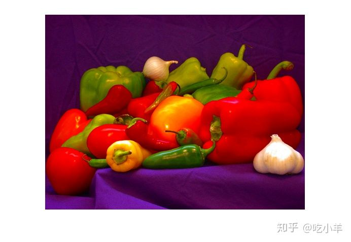
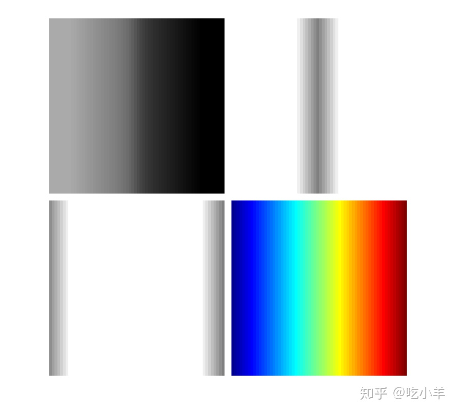

Home
本示例说明如何通过将彩色图像转换为HSV颜色空间来调整其饱和度。该示例显示了合成图像的单独HSV颜色平面（色相，饱和度和值）。
将RGB图像转换为HSV图像
将RGB图像读入工作区。显示图像。
RGB = imread('peppers.png');
imshow(RGB)

将图像转换为HSV颜色空间。
HSV = rgb2hsv(RGB);
处理HSV图像。本示例通过将S通道乘以比例因子来增加图像的饱和度。
[h,s,v] = imsplit(HSV); saturationFactor = 2; s_sat = s*saturationFactor; HSV_sat = cat(3,h,s_sat,v);
将已处理的HSV图像转换回RGB颜色空间。显示新的RGB图像。处理后的图像中的颜色更加鲜艳。
RGB_sat = hsv2rgb(HSV_sat); imshow(RGB_sat)

仔细研究HSV色彩空间
为了更仔细地检查HSV颜色空间，创建一个合成RGB图像。
RGB = reshape(ones(64,1)*reshape(jet(64),1,192),[64,64,3]);
将合成RGB图像转换为HSV色彩空间。
HSV = rgb2hsv(RGB);
将合成图像的HSV版本划分为其组成平面：色相，饱和度和值。
[h,s,v] = imsplit(HSV);
显示带有原始图像的各个HSV彩色平面。
montage({h,s,v,RGB},"BorderSize",10,"BackgroundColor",'w');

如上图中的色相平面图像所示，色相值从高到低呈线性过渡。如果将色相平面图像与原始图像进行比较，则可以看到深蓝色阴影的值最高，而深红色阴影的值最低。（如前所述，在色相标度的两端都有红色值。为避免混淆，样本图像仅使用色相范围开始处的红色值。）
可以将饱和度视为颜色的纯度。如饱和度平面图像所示，具有最高饱和度的颜色具有最高值，并表示为白色。在饱和度图像的中央，请注意各种灰色阴影。这些对应于多种颜色；青色，绿色和黄色阴影是真实颜色的混合。值大致等于亮度，您会注意到值平面的最亮区域对应于原始图像中的最亮颜色。
======================================================================
我的测试结果及程序
下面是我测试的代码：

注：本文根据MATLAB官网内容修改而成。